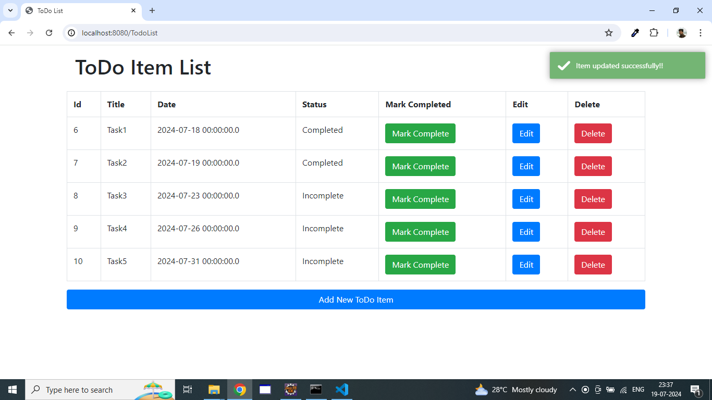
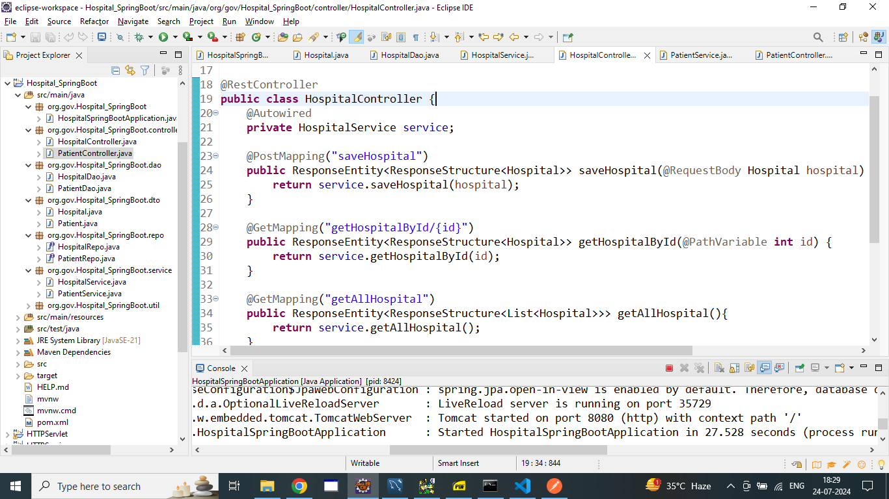
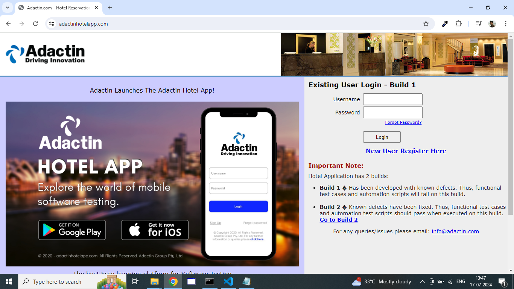

To-Do ApplicationDeveloped a To-Do Application which is simple yet powerful tool designed to help users manage their tasks and improve productivity. The application will allow users to create, read, update, delete, and organize their tasks efficiently. The goal is to provide a clean, intuitive interface that makes task management seamless and enjoyable. TOOLS & TECHNIQUES: Java, SpringBoot, Hibernate, MySQL, JSP |
 |
e-Health Records System (eHRS)An electronic Health Records System (eHRS) is developed to handle patient medical records in an efficient and secure manner. This system enables healthcare providers to store, access, modify, and remove patient information and medical records while maintaining data integrity and confidentiality. TOOLS & TECHNIQUES: Java, SpringBoot, Hibernate, MySQL |
 |
AdactinTo check user can book hotel rooms in "Adactin Hotel" application. Thus functional test cases and automation test scripts should pass when executed on this build and verified the application was successfully deployed to the qa environment. TOOLS & TECHNIQUES: Core Java, Manual testing, Selenium |
 |